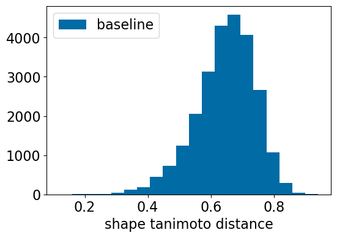
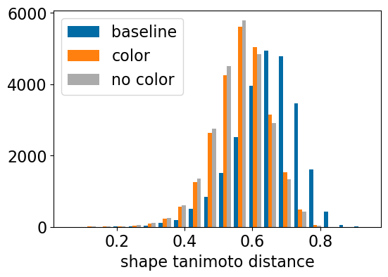
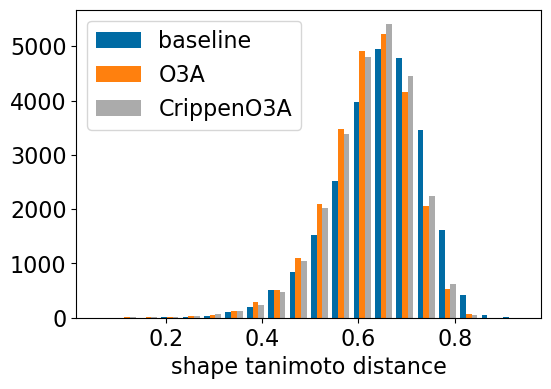
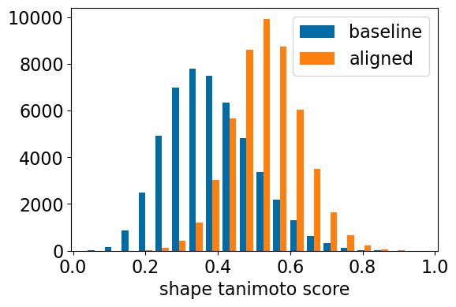
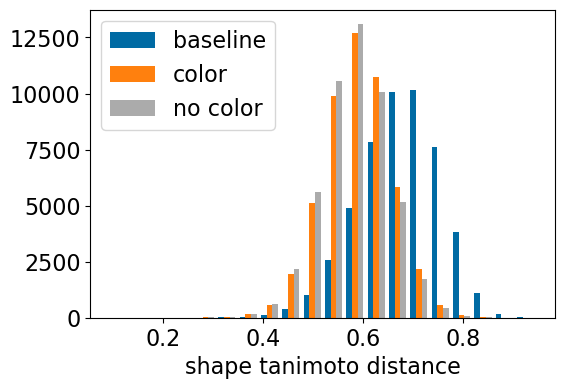
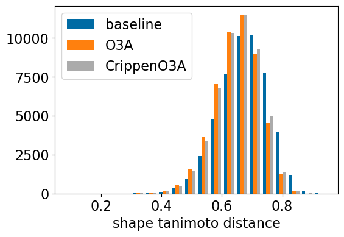
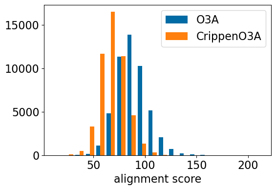

from rdkit import Chem
from rdkit.Chem import Draw
from rdkit.Chem.Draw import IPythonConsole
IPythonConsole.ipython_3d = True
from matplotlib import pyplot as plt
plt.style.use('tableau-colorblind10')
plt.rcParams['font.size'] = '16'
%matplotlib inline
%load_ext sql
%config SqlMagic.feedback=0Thresholds for “random” with 3D similarity methods
datasets
3d
reference
What is noise in 3D?
Intro
In this one I’m generating some reference data for 3D similarity approaches. The idea is inspired by this blog post, where I figured out noise thresholds for similarity calculations with a bunch of 2D fingerprints. Here I do basically the same thing: calculating a number of different 3D similarity (or distance) metrics on random pairs of molecules in order to establish noise thresholds for those metrics.
I compare results from two different data sets for this: 1. 25000 random pairs of molecules with crystal structures from the LOBSTER data set. The last three blog posts have looked at LOBSTER. I used the crystal structures from the LOBSTER data set for these molecules. 2. 50000 random pairs of molecules from the ChEMBL set I used in the fingerprint thresholds post. I used ETKDGv3 conformers for these molecules.
The first data set is considerably less diverse, the pairs are formed from only 3583 unique molecules, but the 3D structures are from crystals so I think it’s worth considering (even though we know that ETKDG does generally produce reasonable structures). For cases where the values disagree, I think it’s probably better to use the ChEMBL results since they come from a larger data set.
Here’s the summary of the results.
Alignment based approaches
Here some of the metrics are similarity based, where the thresholds are lower bounds, and some are distance based, where the thresholds are upper bounds. Rather than transform the distance into similarity, I think it’s more useful to report the values that actually come from the RDKit function. If this turns out to be wrong, I will update the blog post.
For example, if you do a shape-based alignment of two molecules to each other and get a shape Tanimoto score of 0.80, the LOBSTER data would say that the value is larger than 95% of the random pairs while the ChEMBL data says it’s larger (more significant) than 99% of the random pairs. Similarly, if the shape-based alignment produces a shape Tanimoto distance of 0.30, both data sets would say that the distance is smaller (more significant) than 99% of the random pairs.
LOBSTER Set
| metric | 70% | 80% | 90% | 95% | 99% | type |
|---|---|---|---|---|---|---|
| baseline_ShapeTanimoto | >0.49 | >0.54 | >0.62 | >0.69 | >0.81 | SIMILARITY |
| shape_align_ShapeTanimoto | >0.62 | >0.66 | >0.71 | >0.76 | >0.85 | SIMILARITY |
| baseline_TanimotoDist | <0.61 | <0.57 | <0.52 | <0.48 | <0.39 | DISTANCE |
| shape_align_TanimotoDist | <0.53 | <0.50 | <0.46 | <0.42 | <0.34 | DISTANCE |
| shape_align_noc_TanimotoDist | <0.52 | <0.49 | <0.45 | <0.42 | <0.34 | DISTANCE |
| o3a_align_TanimotoDist | <0.58 | <0.55 | <0.51 | <0.46 | <0.36 | DISTANCE |
| crippeno3a_align_TanimotoDist | <0.59 | <0.56 | <0.51 | <0.47 | <0.37 | DISTANCE |
ChEMBL Set
| metric | 70% | 80% | 90% | 95% | 99% | type |
|---|---|---|---|---|---|---|
| baseline_ShapeTanimoto | >0.44 | >0.48 | >0.54 | >0.59 | >0.69 | SIMILARITY |
| shape_align_ShapeTanimoto | >0.58 | >0.61 | >0.65 | >0.69 | >0.76 | SIMILARITY |
| baseline_TanimotoDist | <0.64 | <0.61 | <0.57 | <0.54 | <0.47 | DISTANCE |
| shape_align_TanimotoDist | <0.55 | <0.53 | <0.50 | <0.47 | <0.42 | DISTANCE |
| shape_align_noc_TanimotoDist | <0.55 | <0.53 | <0.50 | <0.47 | <0.41 | DISTANCE |
| o3a_align_TanimotoDist | <0.61 | <0.59 | <0.55 | <0.52 | <0.46 | DISTANCE |
| crippeno3a_align_TanimotoDist | <0.61 | <0.59 | <0.55 | <0.52 | <0.46 | DISTANCE |
Non-alignment based approaches
LOBSTER Set
| metric | 70% | 80% | 90% | 95% | 99% | type |
|---|---|---|---|---|---|---|
| USR_score | >0.66 | >0.71 | >0.76 | >0.80 | >0.87 | SIMILARITY |
| noh_USR_score | >0.66 | >0.71 | >0.76 | >0.80 | >0.86 | SIMILARITY |
| AP3D_DiceSimilarity | >0.49 | >0.54 | >0.60 | >0.63 | >0.70 | SIMILARITY |
| noh_AP3D_DiceSimilarity | >0.29 | >0.33 | >0.38 | >0.43 | >0.51 | SIMILARITY |
| E3FP_DiceSimilarity | >0.28 | >0.31 | >0.34 | >0.37 | >0.43 | SIMILARITY |
| noh_E3FP_DiceSimilarity | >0.23 | >0.26 | >0.29 | >0.32 | >0.38 | SIMILARITY |
ChEMBL Set
| metric | 70% | 80% | 90% | 95% | 99% | type |
|---|---|---|---|---|---|---|
| USR_score | >0.65 | >0.69 | >0.74 | >0.78 | >0.84 | SIMILARITY |
| noh_USR_score | >0.65 | >0.69 | >0.74 | >0.78 | >0.84 | SIMILARITY |
| AP3D_DiceSimilarity | >0.57 | >0.60 | >0.65 | >0.68 | >0.73 | SIMILARITY |
| noh_AP3D_DiceSimilarity | >0.34 | >0.37 | >0.42 | >0.45 | >0.51 | SIMILARITY |
| E3FP_DiceSimilarity | >0.30 | >0.33 | >0.35 | >0.38 | >0.42 | SIMILARITY |
| noh_E3FP_DiceSimilarity | >0.26 | >0.28 | >0.30 | >0.32 | >0.36 | SIMILARITY |
import rdkit
print(rdkit.__version__)2025.09.3Getting started
import lwreg
from lwreg import utilsLoad our lwreg configuration from the database we created before:
config = utils.configure_from_database(dbname='lobster_112024',dbtype='postgresql')
lwreg.set_default_config(config)
config{'dbname': 'lobster_112024',
'dbtype': 'postgresql',
'cacheConnection': True,
'standardization': 'none',
'removeHs': 1,
'useTautomerHashv2': 0,
'registerConformers': 1,
'numConformerDigits': 3,
'lwregSchema': ''}Random pairs from LOBSTER
Get a map from (nm,pdb) tuples to (molregno,confid,molblock):
d = %sql postgresql://localhost/lobster_112024 \
select ligname,pdb,molregno,conf_id,molblock \
from lobster_data.all_ligands join conformers using (molregno,conf_id);
ligs = {}
for nm,pdb,mrn,cid,mb in d:
mol = Chem.MolFromMolBlock(mb,removeHs=False)
mol_noh = Chem.MolFromMolBlock(mb)
ligs[(mrn,cid)] = (nm,pdb,mb,mol,mol_noh)Create a bunch of random pairs:
import random
random.seed(0xa100f)
ks = list(ligs.keys())
base = []
while len(base)<25000:
t = ks[:]
random.shuffle(t)
base.extend(t)
tbase = base[:]
random.shuffle(tbase)
pairs = set((min(x,y),max(x,y)) for x,y in zip(base,tbase) if x!=y)
len(pairs)25029pairs = list(pairs)[:25000]
pairs[:5][((453, 453), (925, 925)),
((1574, 1574), (2733, 2733)),
((175, 175), (3247, 3247)),
((1719, 1719), (3118, 3118)),
((3054, 3054), (3458, 3458))]Shape-based alignment
Let’s see what we get when we perform shape-based alignment using the crystal conformers.
Start by aligning the crystal conformers.
import gzip,pickle
res_accum = pickle.load(open('./results/3d_random_distances.pkl','rb'))
from rdkit.Chem import rdShapeAlign
from rdkit.Chem import rdShapeHelpers
from rdkit.Chem import rdMolTransformsfrom collections import defaultdict
res_accum = defaultdict(list)from rdkit.Chem import rdShapeAlign
from rdkit.Chem import rdShapeHelpers
from rdkit.Chem import rdMolTransforms
from tqdm import tqdm
for c1,c2 in tqdm(pairs):
m1 = Chem.Mol(ligs[c1][3])
m2 = Chem.Mol(ligs[c2][3])
rdMolTransforms.CanonicalizeConformer(m1.GetConformer())
rdMolTransforms.CanonicalizeConformer(m2.GetConformer())
st,ct = rdShapeAlign.AlignMol(m1,m2,opt_param=0.5)
res_accum['shape_align_ShapeTanimoto'].append(st)
res_accum['shape_align_ColorTanimoto'].append(ct)
res_accum['shape_align_TanimotoDist'].append(rdShapeHelpers.ShapeTanimotoDist(m1,m2))
rdMolTransforms.CanonicalizeConformer(m1.GetConformer())
rdMolTransforms.CanonicalizeConformer(m2.GetConformer())
st,ct = rdShapeAlign.AlignMol(m1,m2,opt_param=1.0,useColors=False)
res_accum['shape_align_noc_ShapeTanimoto'].append(st)
res_accum['shape_align_noc_TanimotoDist'].append(rdShapeHelpers.ShapeTanimotoDist(m1,m2))
100%|███████████████████████████████████████████████████████████████████████| 25000/25000 [00:47<00:00, 530.84it/s]Open3DAlign
What about an alternative 3D alignment algorithm? Let’s try aligning with Paolo Tosco’s Open3DAlign:
from rdkit.Chem import rdMolAlign
for c1,c2 in tqdm(pairs):
m1 = Chem.Mol(ligs[c1][3])
m2 = Chem.Mol(ligs[c2][3])
try:
o3a = rdMolAlign.GetO3A(m2,m1)
rmsd = o3a.Align()
score = o3a.Score()
res_accum['o3a_align_rmsd'].append(rmsd)
res_accum['o3a_align_scpre'].append(score)
res_accum['o3a_align_TanimotoDist'].append(rdShapeHelpers.ShapeTanimotoDist(m1,m2))
except ValueError:
pass
100%|███████████████████████████████████████████████████████████████████████| 25000/25000 [02:06<00:00, 198.35it/s]The RDKit has a variation on Open3DAlign that uses atomic contributions to the MolLogP value instead of MMFF94 atom types
from rdkit.Chem import rdMolAlign
for c1,c2 in tqdm(pairs):
m1 = Chem.Mol(ligs[c1][3])
m2 = Chem.Mol(ligs[c2][3])
try:
o3a = rdMolAlign.GetCrippenO3A(m2,m1)
rmsd = o3a.Align()
score = o3a.Score()
res_accum['crippeno3a_align_rmsd'].append(rmsd)
res_accum['crippeno3a_align_scpre'].append(score)
res_accum['crippeno3a_align_TanimotoDist'].append(rdShapeHelpers.ShapeTanimotoDist(m1,m2))
except ValueError:
pass100%|███████████████████████████████████████████████████████████████████████| 25000/25000 [01:08<00:00, 366.77it/s]Baseline: canonical alignment
Just put the molecules in their principle-axis frame
res_accum['baseline_TanimotoDist'] = []
from tqdm import tqdm
for c1,c2 in tqdm(pairs):
m1 = Chem.Mol(ligs[c1][3])
m2 = Chem.Mol(ligs[c2][3])
rdMolTransforms.CanonicalizeConformer(m1.GetConformer())
rdMolTransforms.CanonicalizeConformer(m2.GetConformer())
res_accum['baseline_TanimotoDist'].append(rdShapeHelpers.ShapeTanimotoDist(m1,m2))100%|██████████████████████████████████████████████████████████████████████| 25000/25000 [00:07<00:00, 3483.93it/s]Baseline: tanimoto shape score in the canonical alignment
In the v2025.09.3 RDKit release (released the day before I wrote this post), Dave Cosgrove added a function allowing two molecules to be scored using the Pubchem shape alignment code without doing the alignment first. This gives a score that is directly comparable to what you get when you do an alignment.
res_accum['baseline_ShapeTanimoto'] = []
from tqdm import tqdm
for c1,c2 in tqdm(pairs):
m1 = Chem.Mol(ligs[c1][3])
m2 = Chem.Mol(ligs[c2][3])
rdMolTransforms.CanonicalizeConformer(m1.GetConformer())
rdMolTransforms.CanonicalizeConformer(m2.GetConformer())
opts = rdShapeAlign.ShapeInputOptions()
res_accum['baseline_ShapeTanimoto'].append(rdShapeAlign.ScoreMol(m1,m2,opts,opts))100%|██████████████████████████████████████████████████████████████████████| 25000/25000 [00:05<00:00, 4227.54it/s]import pickle
pickle.dump(res_accum,open('./results/3d_random_distances.pkl','wb+'))plt.figure(figsize=(6,4))
plt.hist([[x[0] for x in res_accum['baseline_ShapeTanimoto']],res_accum['shape_align_ShapeTanimoto']],
bins=20,label=['baseline','aligned'])
plt.xlabel('shape tanimoto score');
plt.legend();
plt.figure(figsize=(6,4))
plt.hist([res_accum['baseline_TanimotoDist'],],bins=20,label=['baseline',])
plt.xlabel('shape tanimoto distance');
plt.legend();
plt.figure(figsize=(6,4))
plt.hist([res_accum['baseline_TanimotoDist'],res_accum['shape_align_TanimotoDist'],res_accum['shape_align_noc_TanimotoDist']],bins=20,label=['baseline','color','no color'])
plt.xlabel('shape tanimoto distance');
plt.legend();
plt.figure(figsize=(6,4))
plt.hist([res_accum['baseline_TanimotoDist'],res_accum['o3a_align_TanimotoDist'],res_accum['crippeno3a_align_TanimotoDist']],
bins=20,label=['baseline','O3A','CrippenO3A'])
plt.xlabel('shape tanimoto distance');
plt.legend();
Non-alignment methods
from rdkit.Chem import rdMolDescriptors
res_accum['USR_score'] = []
res_accum['noh_USR_score'] = []
for c1,c2 in tqdm(pairs):
m1 = Chem.Mol(ligs[c1][3])
m2 = Chem.Mol(ligs[c2][3])
usr1 = rdMolDescriptors.GetUSR(m1)
usr2 = rdMolDescriptors.GetUSR(m2)
res_accum['USR_score'].append(rdMolDescriptors.GetUSRScore(usr1,usr2))
m1 = Chem.Mol(ligs[c1][4])
m2 = Chem.Mol(ligs[c2][4])
usr1 = rdMolDescriptors.GetUSR(m1)
usr2 = rdMolDescriptors.GetUSR(m2)
res_accum['noh_USR_score'].append(rdMolDescriptors.GetUSRScore(usr1,usr2))
100%|██████████████████████████████████████████████████████████████████████| 25000/25000 [00:03<00:00, 6754.96it/s]fpg = rdFingerprintGenerator.GetAtomPairGenerator(use2D=False)
res_accum['AP3D_DiceSimilarity'] = []
res_accum['noh_AP3D_DiceSimilarity'] = []
for c1,c2 in tqdm(pairs):
m1 = Chem.Mol(ligs[c1][3])
m2 = Chem.Mol(ligs[c2][3])
if not m1.GetNumConformers() or not m2.GetNumConformers():
continue
fp1 = fpg.GetCountFingerprint(m1)
fp2 = fpg.GetCountFingerprint(m2)
res_accum['AP3D_DiceSimilarity'].append(DataStructs.DiceSimilarity(fp1,fp2))
m1 = Chem.Mol(ligs[c1][4])
m2 = Chem.Mol(ligs[c2][4])
fp1 = fpg.GetCountFingerprint(m1)
fp2 = fpg.GetCountFingerprint(m2)
res_accum['noh_AP3D_DiceSimilarity'].append(DataStructs.DiceSimilarity(fp1,fp2))100%|██████████████████████████████████████████████████████████████████████| 25000/25000 [00:21<00:00, 1148.58it/s]import logging
from e3fp.pipeline import fprints_from_mol
logging.disable(logging.INFO)
def get_fp(m):
fp = fprints_from_mol(m,fprint_params={'counts':True})[0]
rdkfp = DataStructs.ULongSparseIntVect(2**32)
for k,v in fp.counts.items():
rdkfp[int(k)] = v
return rdkfp
res_accum['E3FP_DiceSimilarity'] = []
res_accum['noh_E3FP_DiceSimilarity'] = []
for c1,c2 in tqdm(pairs):
m1 = Chem.Mol(ligs[c1][3])
m2 = Chem.Mol(ligs[c2][3])
fp1 = get_fp(m1)
fp2 = get_fp(m2)
res_accum['E3FP_DiceSimilarity'].append(DataStructs.DiceSimilarity(fp1,fp2))
m1 = Chem.Mol(ligs[c1][4])
m2 = Chem.Mol(ligs[c2][4])
fp1 = get_fp(m1)
fp2 = get_fp(m2)
res_accum['noh_E3FP_DiceSimilarity'].append(DataStructs.DiceSimilarity(fp1,fp2))100%|████████████████████████████████████████████████████████████████████████| 25000/25000 [39:01<00:00, 10.68it/s]import pickle
pickle.dump(res_accum,open('./results/3d_random_distances.pkl','wb+'))Random ChEMBL molecules
Using the pairs of random molecules I used for the fingerprint thresholds post and other blog posts about similarity.
import gzip
ind = [x.split(b'\t') for x in gzip.open('../data/chembl35_50K.mfp0.pairs.txt.gz')]
ms1 = []
ms2 = []
for i,row in enumerate(ind):
m1 = Chem.AddHs(Chem.MolFromSmiles(row[1]))
ms1.append(m1)
m2 = Chem.AddHs(Chem.MolFromSmiles(row[3]))
ms2.append(m2)random.seed(23)
random.shuffle(ms2)len(ms1)50000try:
import ipyparallel as ipp
rc = ipp.Client()
dview = rc[:]
dview.execute('from rdkit import Chem')
dview.execute('from rdkit.Chem import rdDistGeom')
dview.execute('from rdkit.Chem import rdMolAlign')
dview.execute('from rdkit.Chem import rdMolTransforms')
dview.execute('from rdkit.Chem import rdShapeHelpers')
dview.execute('from rdkit.Chem import rdShapeAlign')
dview.execute('from rdkit.Chem import rdFingerprintGenerator')
dview.execute('from rdkit import DataStructs')
dview.execute('from e3fp.pipeline import fprints_from_mol')
dview.execute('import logging;logging.disable(logging.INFO)')
except:
print("could not use ipyparallel")
dview = NoneGenerate one ETKDGv3 conformer per molecule:
from rdkit.Chem import rdDistGeom
ms1c = dview.map_sync(lambda x:(rdDistGeom.EmbedMolecule(x,randomSeed=0xf00d),x), ms1)
ms2c = dview.map_sync(lambda x:(rdDistGeom.EmbedMolecule(x,randomSeed=0xf00d),x), ms2)import pickle
import gzip
pickle.dump((ms1c,ms2c),gzip.open('./results/random_pairs_confs.pkl.gz','wb+'))res_accum2 = defaultdict(list)
for m1,m2 in tqdm(zip(ms1c,ms2c)):
m1 = Chem.Mol(m1[1])
m2 = Chem.Mol(m2[1])
if not m1.GetNumConformers() or not m2.GetNumConformers():
continue
rdMolTransforms.CanonicalizeConformer(m1.GetConformer())
rdMolTransforms.CanonicalizeConformer(m2.GetConformer())
res_accum2['baseline_TanimotoDist'].append(rdShapeHelpers.ShapeTanimotoDist(m1,m2))
st,ct = rdShapeAlign.AlignMol(m1,m2,opt_param=0.5)
res_accum2['shape_align_ShapeTanimoto'].append(st)
res_accum2['shape_align_ColorTanimoto'].append(ct)
res_accum2['shape_align_TanimotoDist'].append(rdShapeHelpers.ShapeTanimotoDist(m1,m2))
rdMolTransforms.CanonicalizeConformer(m1.GetConformer())
rdMolTransforms.CanonicalizeConformer(m2.GetConformer())
st,ct = rdShapeAlign.AlignMol(m1,m2,opt_param=1.0,useColors=False)
res_accum2['shape_align_noc_ShapeTanimoto'].append(st)
res_accum2['shape_align_noc_TanimotoDist'].append(rdShapeHelpers.ShapeTanimotoDist(m1,m2))res_accum2 = pickle.load(open('./results/3d_random_distances2.pkl','rb'))res_accum2['baseline_ShapeTanimoto'] = []
for m1,m2 in tqdm(zip(ms1c,ms2c)):
m1 = Chem.Mol(m1[1])
m2 = Chem.Mol(m2[1])
if not m1.GetNumConformers() or not m2.GetNumConformers():
continue
rdMolTransforms.CanonicalizeConformer(m1.GetConformer())
rdMolTransforms.CanonicalizeConformer(m2.GetConformer())
opts = rdShapeAlign.ShapeInputOptions()
res_accum2['baseline_ShapeTanimoto'].append(rdShapeAlign.ScoreMol(m1,m2,opts,opts))50000it [00:12, 3934.62it/s]for m1,m2 in tqdm(zip(ms1c,ms2c)):
m1 = Chem.Mol(m1[1])
m2 = Chem.Mol(m2[1])
if not m1.GetNumConformers() or not m2.GetNumConformers():
continue
try:
o3a = rdMolAlign.GetO3A(m2,m1)
rmsd = o3a.Align()
score = o3a.Score()
res_accum2['o3a_align_rmsd'].append(rmsd)
res_accum2['o3a_align_scpre'].append(score)
res_accum2['o3a_align_TanimotoDist'].append(rdShapeHelpers.ShapeTanimotoDist(m1,m2))
except ValueError:
pass50000it [07:06, 117.30it/s]for m1,m2 in tqdm(zip(ms1c,ms2c)):
m1 = Chem.Mol(m1[1])
m2 = Chem.Mol(m2[1])
if not m1.GetNumConformers() or not m2.GetNumConformers():
continue
try:
o3a = rdMolAlign.GetCrippenO3A(m2,m1)
rmsd = o3a.Align()
score = o3a.Score()
res_accum2['crippeno3a_align_rmsd'].append(rmsd)
res_accum2['crippeno3a_align_scpre'].append(score)
res_accum2['crippeno3a_align_TanimotoDist'].append(rdShapeHelpers.ShapeTanimotoDist(m1,m2))
except ValueError:
pass50000it [03:43, 223.62it/s]from rdkit.Chem import rdMolDescriptors
res_accum2['USR_score'] = []
res_accum2['noh_USR_score'] = []
for m1,m2 in tqdm(zip(ms1c,ms2c)):
m1 = Chem.Mol(m1[1])
m2 = Chem.Mol(m2[1])
if not m1.GetNumConformers() or not m2.GetNumConformers():
continue
usr1 = rdMolDescriptors.GetUSR(m1)
usr2 = rdMolDescriptors.GetUSR(m2)
res_accum2['USR_score'].append(rdMolDescriptors.GetUSRScore(usr1,usr2))
m1 = Chem.RemoveHs(m1)
m2 = Chem.RemoveHs(m2)
usr1 = rdMolDescriptors.GetUSR(m1)
usr2 = rdMolDescriptors.GetUSR(m2)
res_accum2['noh_USR_score'].append(rdMolDescriptors.GetUSRScore(usr1,usr2))50000it [00:18, 2744.31it/s]fpg = rdFingerprintGenerator.GetAtomPairGenerator(use2D=False)
res_accum2['AP3D_DiceSimilarity'] = []
res_accum2['noh_AP3D_DiceSimilarity'] = []
for m1,m2 in tqdm(zip(ms1c,ms2c)):
m1 = Chem.Mol(m1[1])
m2 = Chem.Mol(m2[1])
if not m1.GetNumConformers() or not m2.GetNumConformers():
continue
fp1 = fpg.GetCountFingerprint(m1)
fp2 = fpg.GetCountFingerprint(m2)
res_accum2['AP3D_DiceSimilarity'].append(DataStructs.DiceSimilarity(fp1,fp2))
m1 = Chem.RemoveHs(m1)
m2 = Chem.RemoveHs(m2)
fp1 = fpg.GetCountFingerprint(m1)
fp2 = fpg.GetCountFingerprint(m2)
res_accum2['noh_AP3D_DiceSimilarity'].append(DataStructs.DiceSimilarity(fp1,fp2))50000it [01:12, 688.09it/s]res_accum2['E3FP_DiceSimilarity'] = []
res_accum2['noh_E3FP_DiceSimilarity'] = []
for m1,m2 in tqdm(zip(ms1c,ms2c)):
m1 = Chem.Mol(m1[1])
m2 = Chem.Mol(m2[1])
if not m1.GetNumConformers() or not m2.GetNumConformers():
continue
fp1 = get_fp(m1)
fp2 = get_fp(m2)
res_accum2['E3FP_DiceSimilarity'].append(DataStructs.DiceSimilarity(fp1,fp2))
m1 = Chem.RemoveHs(m1)
m2 = Chem.RemoveHs(m2)
fp1 = get_fp(m1)
fp2 = get_fp(m2)
res_accum2['noh_E3FP_DiceSimilarity'].append(DataStructs.DiceSimilarity(fp1,fp2))50000it [1:49:13, 7.63it/s]import pickle
pickle.dump(res_accum2,open('./results/3d_random_distances2.pkl','wb+'))plt.figure(figsize=(6,4))
plt.hist([[x[0] for x in res_accum2['baseline_ShapeTanimoto']],res_accum2['shape_align_ShapeTanimoto']],
bins=20,label=['baseline','aligned'])
plt.xlabel('shape tanimoto score');
plt.legend();
plt.figure(figsize=(6,4))
plt.hist([res_accum2['baseline_TanimotoDist'],res_accum2['shape_align_TanimotoDist'],res_accum2['shape_align_noc_TanimotoDist']],bins=20,label=['baseline','color','no color'])
plt.xlabel('shape tanimoto distance');
plt.legend();
plt.figure(figsize=(6,4))
plt.hist([res_accum2['baseline_TanimotoDist'],res_accum2['o3a_align_TanimotoDist'],res_accum2['crippeno3a_align_TanimotoDist']],
bins=20,label=['baseline','O3A','CrippenO3A'])
plt.xlabel('shape tanimoto distance');
plt.legend();
res_accum2.keys()dict_keys(['baseline_TanimotoDist', 'shape_align_ShapeTanimoto', 'shape_align_ColorTanimoto', 'shape_align_TanimotoDist', 'shape_align_noc_ShapeTanimoto', 'shape_align_noc_TanimotoDist', 'o3a_align_rmsd', 'o3a_align_scpre', 'o3a_align_TanimotoDist', 'crippeno3a_align_rmsd', 'crippeno3a_align_scpre', 'crippeno3a_align_TanimotoDist', 'USR_score', 'noh_USR_score', 'AP3D_DiceSimilarity', 'noh_AP3D_DiceSimilarity', 'E3FP_DiceSimilarity', 'noh_E3FP_DiceSimilarity', 'baseline_ShapeTanimoto'])plt.figure(figsize=(6,4))
plt.hist([res_accum2['o3a_align_scpre'],res_accum2['crippeno3a_align_scpre'],],
bins=20,label=['O3A','CrippenO3A'])
plt.xlabel('alignment score');
plt.legend();
Summary stats
import numpy as npprint('**** LOBSTER Set ****')
print('| baseline_ShapeTanimoto\t|',
' | '.join([">%.2f"%x for x in np.quantile([x[0] for x in res_accum['baseline_ShapeTanimoto']],[0.7, 0.8, 0.9,0.95,0.99])]),
'\t| SIMILARITY |')
print('| shape_align_ShapeTanimoto\t|',
' | '.join([">%.2f"%x for x in np.quantile([x for x in res_accum['shape_align_ShapeTanimoto']],[0.7, 0.8, 0.9,0.95,0.99])]),
'\t| SIMILARITY |')
for k in ['baseline_TanimotoDist','shape_align_TanimotoDist','shape_align_noc_TanimotoDist',
'o3a_align_TanimotoDist','crippeno3a_align_TanimotoDist']:
print(f'| {k}\t|',' | '.join(["<%.2f"%x for x in np.quantile(res_accum[k],[0.3,0.2,0.1,0.05,0.01])]),
'\t| DISTANCE |')
print('**** ChEMBL Set ****')
print('| baseline_ShapeTanimoto\t|',
' | '.join([">%.2f"%x for x in np.quantile([x[0] for x in res_accum2['baseline_ShapeTanimoto']],[0.7, 0.8, 0.9,0.95,0.99])]),
'\t| SIMILARITY |')
print('| shape_align_ShapeTanimoto\t|',
' | '.join([">%.2f"%x for x in np.quantile([x for x in res_accum2['shape_align_ShapeTanimoto']],[0.7, 0.8, 0.9,0.95,0.99])]),
'\t| SIMILARITY |')
for k in ['baseline_TanimotoDist','shape_align_TanimotoDist','shape_align_noc_TanimotoDist',
'o3a_align_TanimotoDist','crippeno3a_align_TanimotoDist']:
print(f'| {k}\t|',' | '.join(["<%.2f"%x for x in np.quantile(res_accum2[k],[0.3,0.2,0.1,0.05,0.01])]),
'\t| DISTANCE |')
print('\n\n\n ------------------ No alignment --------------------')
print('**** LOBSTER Set ****')
for k in ['USR_score','noh_USR_score','AP3D_DiceSimilarity','noh_AP3D_DiceSimilarity',
'E3FP_DiceSimilarity','noh_E3FP_DiceSimilarity']:
print(f'| {k}\t|',' | '.join([">%.2f"%x for x in np.quantile(res_accum[k],[0.7, 0.8, 0.9,0.95,0.99])]),
'\t| SIMILARITY |')
print('**** ChEMBL Set ****')
for k in ['USR_score','noh_USR_score','AP3D_DiceSimilarity','noh_AP3D_DiceSimilarity',
'E3FP_DiceSimilarity','noh_E3FP_DiceSimilarity']:
print(f'| {k}\t|',' | '.join([">%.2f"%x for x in np.quantile(res_accum2[k],[0.7, 0.8, 0.9,0.95,0.99])]),
'\t| SIMILARITY |')
**** LOBSTER Set ****
| baseline_ShapeTanimoto | >0.49 | >0.54 | >0.62 | >0.69 | >0.81 | SIMILARITY |
| shape_align_ShapeTanimoto | >0.62 | >0.66 | >0.71 | >0.76 | >0.85 | SIMILARITY |
| baseline_TanimotoDist | <0.61 | <0.57 | <0.52 | <0.48 | <0.39 | DISTANCE |
| shape_align_TanimotoDist | <0.53 | <0.50 | <0.46 | <0.42 | <0.34 | DISTANCE |
| shape_align_noc_TanimotoDist | <0.52 | <0.49 | <0.45 | <0.42 | <0.34 | DISTANCE |
| o3a_align_TanimotoDist | <0.58 | <0.55 | <0.51 | <0.46 | <0.36 | DISTANCE |
| crippeno3a_align_TanimotoDist | <0.59 | <0.56 | <0.51 | <0.47 | <0.37 | DISTANCE |
**** ChEMBL Set ****
| baseline_ShapeTanimoto | >0.44 | >0.48 | >0.54 | >0.59 | >0.69 | SIMILARITY |
| shape_align_ShapeTanimoto | >0.58 | >0.61 | >0.65 | >0.69 | >0.76 | SIMILARITY |
| baseline_TanimotoDist | <0.64 | <0.61 | <0.57 | <0.54 | <0.47 | DISTANCE |
| shape_align_TanimotoDist | <0.55 | <0.53 | <0.50 | <0.47 | <0.42 | DISTANCE |
| shape_align_noc_TanimotoDist | <0.55 | <0.53 | <0.50 | <0.47 | <0.41 | DISTANCE |
| o3a_align_TanimotoDist | <0.61 | <0.59 | <0.55 | <0.52 | <0.46 | DISTANCE |
| crippeno3a_align_TanimotoDist | <0.61 | <0.59 | <0.55 | <0.52 | <0.46 | DISTANCE |
------------------ No alignment --------------------
**** LOBSTER Set ****
| USR_score | >0.66 | >0.71 | >0.76 | >0.80 | >0.87 | SIMILARITY |
| noh_USR_score | >0.66 | >0.71 | >0.76 | >0.80 | >0.86 | SIMILARITY |
| AP3D_DiceSimilarity | >0.49 | >0.54 | >0.60 | >0.63 | >0.70 | SIMILARITY |
| noh_AP3D_DiceSimilarity | >0.29 | >0.33 | >0.38 | >0.43 | >0.51 | SIMILARITY |
| E3FP_DiceSimilarity | >0.28 | >0.31 | >0.34 | >0.37 | >0.43 | SIMILARITY |
| noh_E3FP_DiceSimilarity | >0.23 | >0.26 | >0.29 | >0.32 | >0.38 | SIMILARITY |
**** ChEMBL Set ****
| USR_score | >0.65 | >0.69 | >0.74 | >0.78 | >0.84 | SIMILARITY |
| noh_USR_score | >0.65 | >0.69 | >0.74 | >0.78 | >0.84 | SIMILARITY |
| AP3D_DiceSimilarity | >0.57 | >0.60 | >0.65 | >0.68 | >0.73 | SIMILARITY |
| noh_AP3D_DiceSimilarity | >0.34 | >0.37 | >0.42 | >0.45 | >0.51 | SIMILARITY |
| E3FP_DiceSimilarity | >0.30 | >0.33 | >0.35 | >0.38 | >0.42 | SIMILARITY |
| noh_E3FP_DiceSimilarity | >0.26 | >0.28 | >0.30 | >0.32 | >0.36 | SIMILARITY |